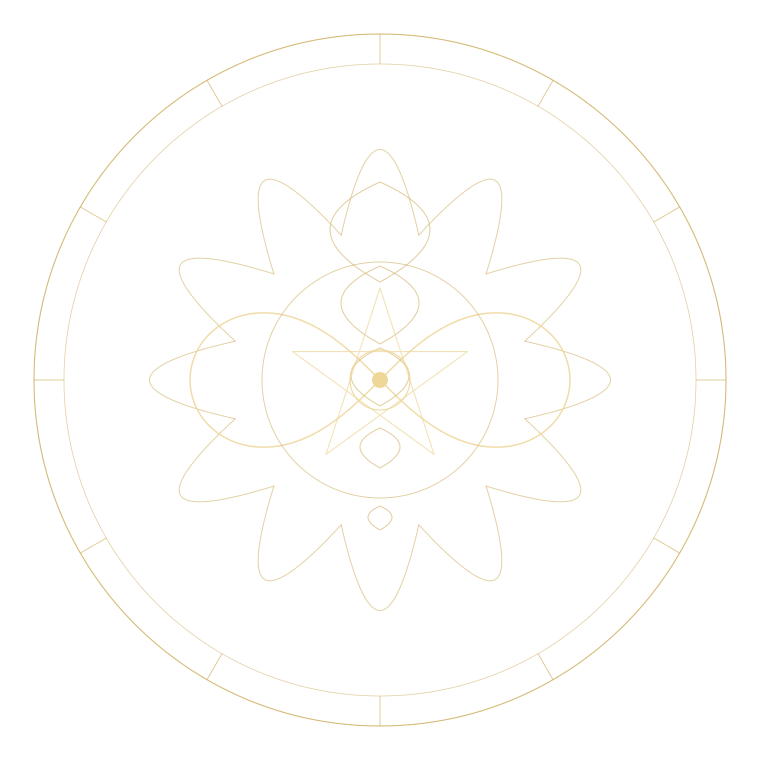

Physical body
The mineral part, obeying the same laws as stone. Shared with everything that exists.

A Goethe scholar who claimed to investigate the spiritual world with the same discipline a botanist brings to a leaf, and who insisted that the first requirement of the path is moral, not psychic: three steps of character for every one step of vision.
Steiner came to occultism through Goethe's scientific writings, which he edited, and never quite left them. Goethe's method was to look at a living form long enough and attentively enough that its law of growth becomes apparent, without substituting a mechanism for the phenomenon. Steiner extended that claim to the invisible: that the human being has members which can be observed, in the same patient way, by a consciousness trained for the purpose.
He ran the German section of the Theosophical Society, then broke with it in 1912 over its promotion of a young Indian boy as the coming world teacher, and founded the Anthroposophical Society. The break matters for reading him: after it, Christ stands at the centre of his cosmology, which is precisely what Blavatsky's successors would not accept. Room V gives their side.
The mineral part, obeying the same laws as stone. Shared with everything that exists.
The body of formative forces: growth, healing, habit, memory. Shared with plants. Steiner's term for whatever it is that keeps an organism organising itself.
The bearer of sensation, desire and antipathy. Shared with animals. In its disciplined form it becomes the organ of moral feeling.
The ego proper, which can say "I" of itself, and which alone can work back on the other three. Human and, in Steiner's account, individual across lives.
The higher members (spirit self, life spirit, spirit man) are the three lower bodies transformed by the I, which is why Steiner's inner path is described as work rather than reception.
Steiner's sense theory is one of his most usable contributions, and it needs no metaphysics to be interesting. He counted twelve, grouped in three.
Whatever one makes of the cosmology, the twelvefold scheme has had a long practical life in Waldorf education, curative work and eurythmy.
From Knowledge of the Higher Worlds and Its Attainment (1904). Steiner's instructions are famously unglamorous: no incense, no spirits named, and a standing warning that development of vision without development of character produces a dangerous person.
Five minutes daily on an ordinary object (a pin, a pencil), holding the train of thought to it and returning it when it strays.
One small action chosen purely because you chose it, performed at the same time each day, with no external reason to do it.
Not suppression of feeling but a slight, deliberate gap between the feeling and its expression, widening over months.
Seeking the element of worth in what one dislikes, without pretending the rest is not there.
Holding the possibility that the next thing said to you is true, especially when it contradicts what you have concluded.
Practising the first five together, in rhythm, until they stop being exercises.
Steiner's three to one rule: for every step taken in occult knowledge, three should be taken in the perfecting of character. Compare Crowley's very different emphasis in room IV and the same warning, differently worded, in room V.
Goethe saw every organ of the plant as a transformation of the leaf: cotyledon, foliage leaf, sepal, petal, stamen, all one gesture at different degrees of contraction and expansion. Steiner made the alternation of contraction and expansion a general law, and drew it as a lemniscate, a figure of eight in which a form passes through a point of reversal and comes back inverted.
Read psychologically, this is the same shape Jung called the transcendent function: the third thing that appears when two opposites are held long enough without resolution.
Anthroposophy produced results that stand on their own ground: Waldorf schools, biodynamic agriculture, eurythmy, curative education, and an architecture that still surprises. It also produced claims about Atlantis, planetary evolution and the composition of the human being which are not testable and which contemporary science rejects.
Steiner's early writings also contain remarks about race and human development which his own later movement has had to confront directly and which this cabinet does not repeat or defend. A reader can take the exercises and the sense theory seriously while refusing that material outright.